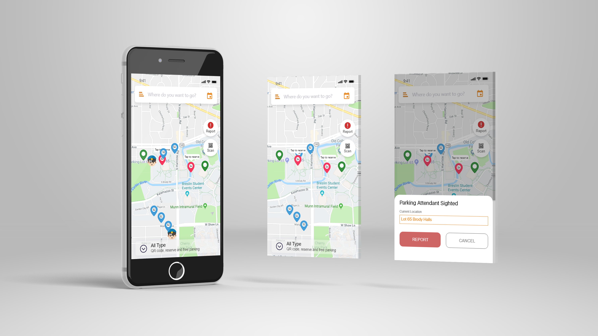

"Bark"
-The crowdsourcing parking app.
Project Type
Individual Project
Project Goal
Approaching a more convenient, easier, parking experience.
Overview
BARK is a crowdsourcing-based parking application aims to boost the efficiency for customers in reporting parking attendant, reservation, and quick checking in/out by QR code. I started this GROUP project with my classmates in Dec 2018, Dr.Wyche's prototyping class. Our main goal is to improve the parking situation around our campus by improving the parking experience.During the assigned developing period, which was less than a week, we only had a very rough product finished. After the DEC 2018, I decided to continue revising it until it meets my expectations.
Time
OCT 2018 - DEC 2018
Involvement
Product Designer
Tools
Adobe XD
Adobe Photoshop
Adobe Illustrator
Teammates
Sawyer Curtiss, Joel Mcelwee, Daniel Khairallah, and Bingyi Liu
Instructor
Susan Wyche, Professor of MI420
Design Sitemap
{kind=link}
Tn order to gave bark better structures, I splited Bark to 4 curcial functions
including report parking attendent，reserving spots, QR code parking, and user profile.
01. Reserving spots: Giving users the ability to reserve spots ahead to painful spots finding experience at high volume time ranges.
02. QR code parking: faster check-in & out experience
03. User profile: Saving payment and providing wallet option to finish payment.
04. Report parking attendant: crowdsourcing-base function help you get away from tickets
Updated thoughts for the previous design choices(Mar 2020):
This site map only grouped specific screens I planned to build without organized hierarchically as well as didn't show any interactions between each other.
Report parking attendant
{kind=link}
01. The report button is on the right side of each interface which is easier
for users to report parking attendents without much efforts.
02. The positioning system can automatically update
the current location so that the users only need to spend two seconds to complete the reporting action.
{kind=link}
03. After receiving the report, this app has 3 ways to notify their user which including the timer page, the lock screen page, and the police icon on the map on the main page.
The lock screen page provides an express payment pathway by simply tapping the notification, giving our users more chances to pay their parking before they get tickets from parking attendants.
Updated thoughts for the previous design choices(Mar 2020):
From visual perspectives, the orange and blue color combination didn't bring harmony to my design.
Using #d6723c to exchange the orange will be a better choice to make for building a complementary harmony.
The idea of making a stopwatch to give users a better understanding of the time they left is great.
However, considering the use of countdown timer could be more straightforward.
Interactions between different screens are unclear.
there are components, for example, the navigation shortcut that appears in some screens not only changing positions but also redundant to some screens.
QR code express parking
{kind=link}
01. The QR code feature provides quick check-in and check-out experiences.
02. Giving users a choice to authorize their payment later.
03. The parking timer page not only gives users the exact time they parked
but also provides notifications about parking attendants for users to pay their parking before getting any tickets.
Updated thoughts for the previous design choices(Mar 2020):
Reserve Spots
{kind=link}
01. At right side of the search bar, users can change the time range they want to reserve their car.
02. Using balance as default payment, users can change their payment method by clicking the small blue button on the top of the payment page.
03. Visualizing the reserve parking page would remind the users more easily on finding their vehicles.
Updated thoughts for the previous design choices(Mar 2020):
In my previous design, the intention of making the parking structure visually appears in the app is to help users find their vehicles easier, however, what I imagined is the ideal situation -- all parking structures have the same layout of the parking lots which isn't true in most cases. As a UX designer, the ultimate goal of our designs aims to make them accessible to our target users as much as possible. Therefore, reconfirm our target user group first then conduct more user research will be a smart thing to do before redesigning the interface.
User profile
{kind=link}
01. I designed the navigation bar on the side due to a more understandable layout purpose.
02. Users can add the licensed plates for their vehicles in our app. After using QR Code parking
or reservation. the default car plate will automatically appear on the payment and parking timer page.
Also, users can change their plates after they check-in with Bark.
03. Users can use credit cards or balance to complete their payments. They also can add new cards by simply scan their cards.
Updated thoughts for the previous design choices(Mar 2020):
Repeating the use of the same icon to express buttons with different meanings.
Secondary screens shouldn't including navigation shortcuts on the screen.
Word choices are not ideally designed, For example, changing "home" to "Map" or "Find parking" can be more intuitive.
Seleted Works

DR.MEOW

CONSULTING PROJECT(IN PROGRESS)